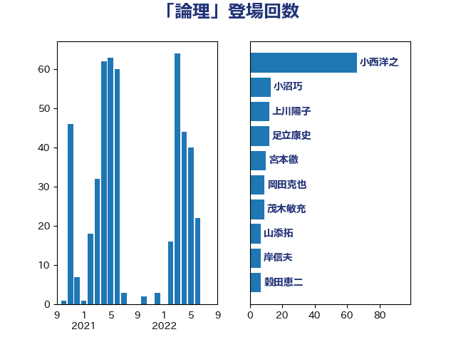

単語「論理」

| 小西洋之 | 立憲民主党 | 66 回 |
| 小沼巧 | 立憲民主党 | 13 回 |
| 上川陽子 | 自由民主党 | 12 回 |
| 足立康史 | 日本維新の会 | 12 回 |
| 宮本徹 | 日本共産党 | 10 回 |
| 岡田克也 | 立憲民主党 | 9 回 |
| 茂木敏充 | 自由民主党 | 9 回 |
| 山添拓 | 日本共産党 | 7 回 |
| 岸信夫 | 自由民主党 | 7 回 |
| 穀田恵二 | 日本共産党 | 7 回 |
| 上田清司 | 国民民主党 | 5 回 |
| 伊波洋一 | 無所属 | 5 回 |
| 前川清成 | 日本維新の会 | 5 回 |
| 篠原豪 | 立憲民主党 | 5 回 |
| 北神圭朗 | 無所属 | 4 回 |
| 寺田学 | 立憲民主党 | 4 回 |
| 後藤祐一 | 立憲民主党 | 4 回 |
| 萩生田光一 | 自由民主党 | 4 回 |
| 藤田文武 | 日本維新の会 | 4 回 |
| 鎌田さゆり | 立憲民主党 | 4 回 |
| 吉田宣弘 | 公明党 | 3 回 |
| 和田有一朗 | 日本維新の会 | 3 回 |
| 山崎誠 | 立憲民主党 | 3 回 |
| 川田龍平 | 立憲民主党 | 3 回 |
| 武井俊輔 | 自由民主党 | 3 回 |
| 石破茂 | 自由民主党 | 3 回 |
| 福島みずほ | 社会民主党 | 3 回 |
| 笠井亮 | 日本共産党 | 3 回 |
| 篠原孝 | 立憲民主党 | 3 回 |
| 緒方林太郎 | 無所属 | 3 回 |
| 野田佳彦 | 立憲民主党 | 3 回 |
| 高良鉄美 | 無所属 | 3 回 |
| 串田誠一 | 日本維新の会 | 2 回 |
| 井上哲士 | 日本共産党 | 2 回 |
| 伊藤孝恵 | 国民民主党 | 2 回 |
| 前原誠司 | 国民民主党 | 2 回 |
| 古賀友一郎 | 自由民主党 | 2 回 |
| 吉良よし子 | 日本共産党 | 2 回 |
| 大塚耕平 | 国民民主党 | 2 回 |
| 大島敦 | 立憲民主党 | 2 回 |
| 宮崎政久 | 自由民主党 | 2 回 |
| 宮本岳志 | 日本共産党 | 2 回 |
| 小泉進次郎 | 自由民主党 | 2 回 |
| 山下芳生 | 日本共産党 | 2 回 |
| 岸真紀子 | 立憲民主党 | 2 回 |
| 平井卓也 | 自由民主党 | 2 回 |
| 後藤茂之 | 自由民主党 | 2 回 |
| 斎藤嘉隆 | 立憲民主党 | 2 回 |
| 有村治子 | 自由民主党 | 2 回 |
| 末松義規 | 立憲民主党 | 2 回 |
| 枝野幸男 | 立憲民主党 | 2 回 |
| 玉木雄一郎 | 国民民主党 | 2 回 |
| 田村憲久 | 自由民主党 | 2 回 |
| 田村貴昭 | 日本共産党 | 2 回 |
| 福山哲郎 | 立憲民主党 | 2 回 |
| 米山隆一 | 立憲民主党 | 2 回 |
| 舟山康江 | 国民民主党 | 2 回 |
| 逢坂誠二 | 立憲民主党 | 2 回 |
| 鈴木敦 | 国民民主党 | 2 回 |
| 階猛 | 立憲民主党 | 2 回 |
| 青山繁晴 | 自由民主党 | 2 回 |
| 高野光二郎 | 自由民主党 | 2 回 |
| 鰐淵洋子 | 公明党 | 2 回 |
| 世耕弘成 | 自由民主党 | 1 回 |
| 中西健治 | 自由民主党 | 1 回 |
| 井野俊郎 | 自由民主党 | 1 回 |
| 伊佐進一 | 公明党 | 1 回 |
| 務台俊介 | 自由民主党 | 1 回 |
| 北側一雄 | 公明党 | 1 回 |
| 古川禎久 | 自由民主党 | 1 回 |
| 吉川沙織 | 立憲民主党 | 1 回 |
| 嘉田由紀子 | 無所属 | 1 回 |
| 坂本哲志 | 自由民主党 | 1 回 |
| 塩村あやか | 立憲民主党 | 1 回 |
| 大西健介 | 立憲民主党 | 1 回 |
| 小沢雅仁 | 立憲民主党 | 1 回 |
| 山本剛正 | 日本維新の会 | 1 回 |
| 山本太郎 | れいわ新選組 | 1 回 |
| 山田俊男 | 自由民主党 | 1 回 |
| 山田美樹 | 自由民主党 | 1 回 |
| 岩田和親 | 自由民主党 | 1 回 |
| 川合孝典 | 国民民主党 | 1 回 |
| 平林晃 | 公明党 | 1 回 |
| 打越さく良 | 立憲民主党 | 1 回 |
| 本庄知史 | 立憲民主党 | 1 回 |
| 柚木道義 | 立憲民主党 | 1 回 |
| 柴田巧 | 日本維新の会 | 1 回 |
| 梅村聡 | 日本維新の会 | 1 回 |
| 梅谷守 | 立憲民主党 | 1 回 |
| 森山浩行 | 立憲民主党 | 1 回 |
| 江田憲司 | 立憲民主党 | 1 回 |
| 河野太郎 | 自由民主党 | 1 回 |
| 泉田裕彦 | 自由民主党 | 1 回 |
| 浅野哲 | 国民民主党 | 1 回 |
| 熊谷裕人 | 立憲民主党 | 1 回 |
| 矢倉克夫 | 公明党 | 1 回 |
| 笠浩史 | 無所属 | 1 回 |
| 細野豪志 | 自由民主党 | 1 回 |
| 芳賀道也 | 国民民主党 | 1 回 |
| 若松謙維 | 公明党 | 1 回 |
| 葉梨康弘 | 自由民主党 | 1 回 |
| 西田実仁 | 公明党 | 1 回 |
| 赤羽一嘉 | 公明党 | 1 回 |
| 辻元清美 | 立憲民主党 | 1 回 |
| 辻清人 | 自由民主党 | 1 回 |
| 進藤金日子 | 自由民主党 | 1 回 |
| 重徳和彦 | 立憲民主党 | 1 回 |
| 長妻昭 | 立憲民主党 | 1 回 |
| 長浜博行 | 無所属 | 1 回 |
| 青柳仁士 | 日本維新の会 | 1 回 |
| 音喜多駿 | 日本維新の会 | 1 回 |
| 高階恵美子 | 自由民主党 | 1 回 |